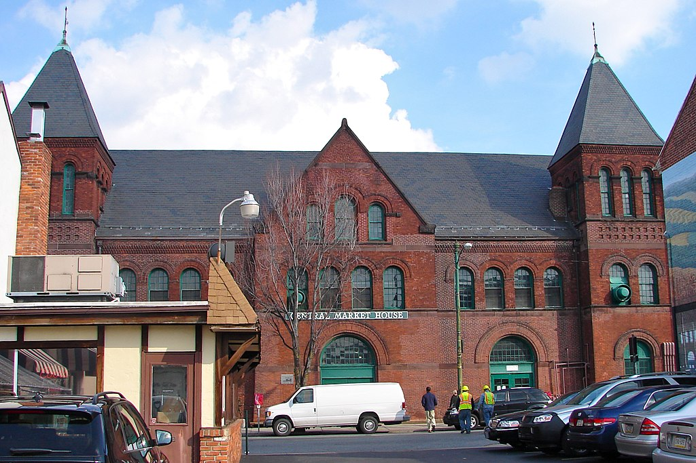
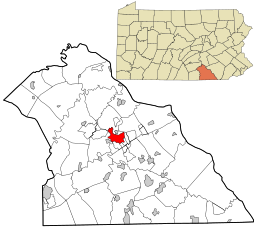

York Central Market
York's Central Market opened in 1888, and is the only farmer's market in York to be standing in its original location.

York County Map
York County is 911 square miles large, almost a third of which is farmland.
The population of York County is 43-40,000 persons based on recent estimates.

Golden Plough Tavern
York was briefly the capital of the United States, and was where the term "United States of America" was coined.

York Fairgrounds
York is home to one of the oldest fairs in the country, having started in 1765.

Stauffer's Animal Crackers
York is also home to several widespread snack food companies, such as Stauffer's, known for their animal crackers, and Snyder's of Hanover.